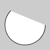
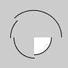
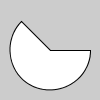

| Name | arc |
||||||||||||
|---|---|---|---|---|---|---|---|---|---|---|---|---|---|
| Examples |

# arc 2 https://processing.org/reference/arc_.html arc(50, 50, 80, 80, 0, PI + QUARTER_PI, OPEN) 
# arc 3 https://processing.org/reference/arc_.html arc(50, 50, 80, 80, 0, PI + QUARTER_PI, CHORD) 
# arc 1 https://processing.org/reference/arc_.html arc(50, 55, 50, 50, 0, HALF_PI) noFill() arc(50, 55, 60, 60, HALF_PI, PI) arc(50, 55, 70, 70, PI, PI + QUARTER_PI) arc(50, 55, 80, 80, PI + QUARTER_PI, TWO_PI) 
# arc 4 https://processing.org/reference/arc_.html arc(50, 50, 80, 80, 0, PI + QUARTER_PI, PIE) | ||||||||||||
| Description |
Draws an arc to the screen. Arcs are drawn along the outer edge of an ellipse defined by the a, b, c, and d parameters. The origin of the arc's ellipse may be changed with the ellipseMode() function. Use the start and stop parameters to specify the angles (in radians) at which to draw the arc. There are three ways to draw an arc; the rendering technique used is defined by the optional seventh paramter. The three options, depicted in the above examples, are PIE, OPEN, and CHORD. The default mode is the OPEN stroke with a PIE fill. |
||||||||||||
| Syntax | arc( | ||||||||||||
| Parameters |
| ||||||||||||
| Related |
ellipse ellipseMode radians degrees |